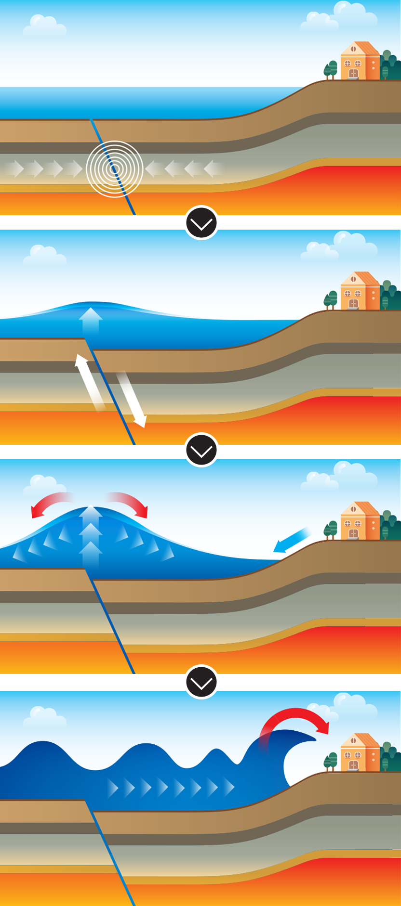
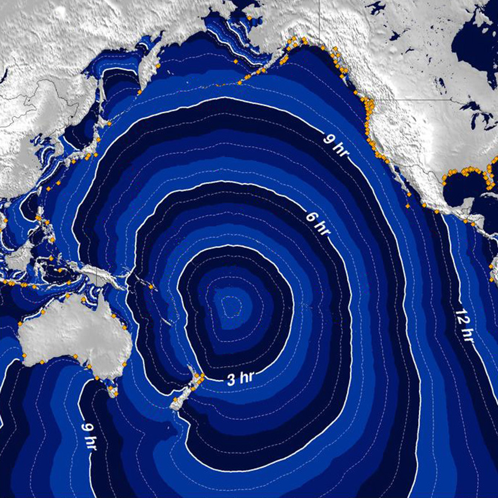

쓰나미의 원인은 해저에서 발생한 지진입니다. 바다 밑 지각의 높이가 달라지면서 바닷물이 끌려갔다가 높은 파도로 밀려오는 것입니다.
현대 과학으로 지진이 언제 어디서 일어날지는 정확하게 예측하기는 어렵지만, 일단 지진이 발생하면 해일이 언제 육지에 도착할지는 비교적 정확하게 예보할 수 있습니다.
(1) 태평양 한가운데에서 지진이 발생하면 9~10시간 후에 미국 서부 해안이 영향을 받게 됩니다.
(2) 일본 서북부 근해에서 지진이 발생한다면 한국 동해안에 쓰나미가 도달하기까지는 약 1시간 30분 걸립니다.
태평양 쓰나미 경보 센터(PTWC)에서 항상 주시하며 사전에 공식 경보를 발령하지만, 가까운 바다에서 지진이 발생하면 대피 시간이 짧아 막대한 피해가 일어나기도 합니다.
2004년 12월 인도양 수마트라 섬에서 160 km 밖에 떨어지지 않은 해저에서 강도 9의 지진이 발생, 15분만에 인도네시아 해안에 쓰나미가 덮쳐 사망자만 23만 명에 달했습니다.